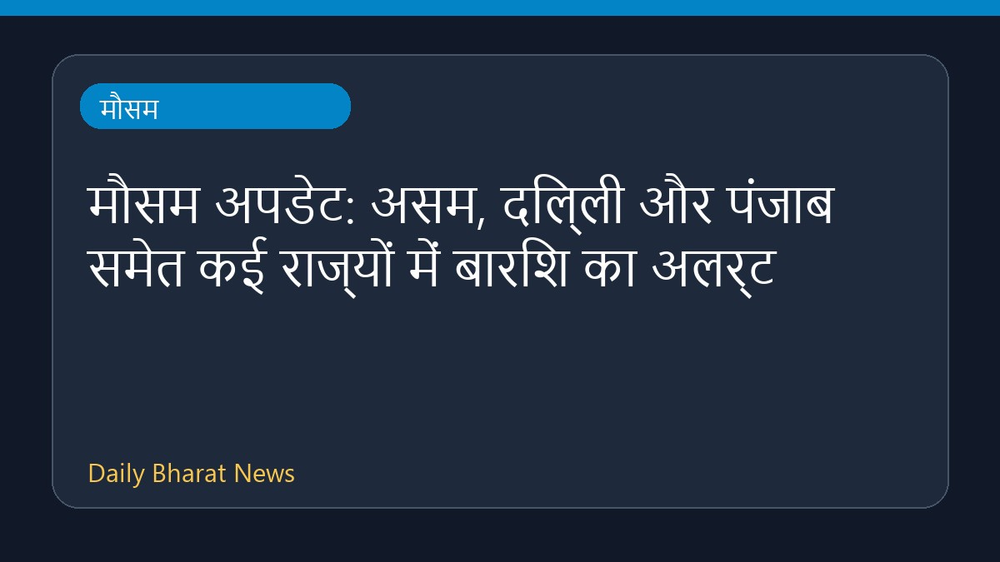

मौसम अपडेट: असम, दिल्ली और पंजाब समेत कई राज्यों में बारिश का अलर्ट

मौसम विभाग से मिली जानकारी के अनुसार, 30 जुलाई के लिए देश के कई प्रमुख राज्यों में भारी बारिश की चेतावनी जारी की गई है। इस सूची में असम, दिल्ली, ओडिशा, पंजाब, हरियाणा, राजस्थान और उत्तराखंड जैसे राज्य शामिल हैं। भारतीय मौसम विज्ञान विभाग (IMD) द्वारा इन क्षेत्रों में बारिश को लेकर अलर्ट जारी किया गया है। मौसम से जुड़ी विस्तृत जानकारी और अपडेट के लिए संबंधित रिपोर्ट देखी जा सकती है, क्योंकि वर्तमान में विवरण सीमित हैं।